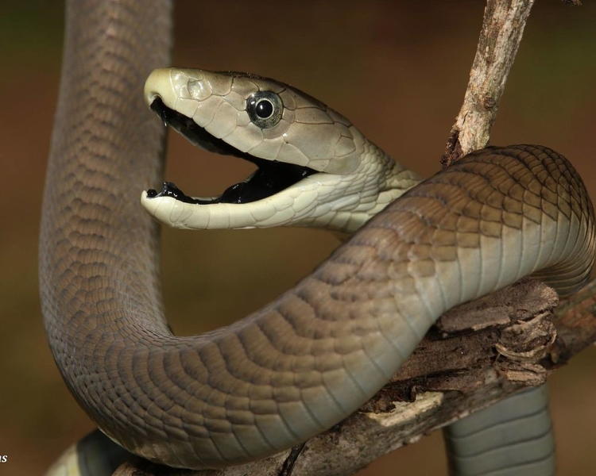

This is an Indian Cobra
The Indian cobra is large highly venomous snake and is a member of the "big four" species that inflict the
most snakebites on humans in India. The Indian cobra is revered in Indian mythology and culture and is often
seen with snake charmers. These snakes vary tremendously in color and pattern throughout their range. The
ventral scales or the underside coloration of this species can be grey, yellow, tan, brown, reddish or
black. Dorsal scales may have a hood mark or color patterns. Salt-and-pepper speckles, especially in adult
specimens, are seen on the dorsal scales. Indian cobras can easily be identified by their relatively large
and quite impressive hood, which they expand when threatened. Many specimens exhibit a hood mark. This hood
mark is located at the rear of the Indian cobra's hood. When the hood mark is present, are two circular
ocelli patterns connected by a curved line, evoking the image of spectacles.

This is an Black Mamba
The Black mamba is an extremely venomous snake native to parts of sub-Saharan Africa. It is the second-longest
venomous snake after the King cobra. Black mambas have a coffin-shaped head with a somewhat pronounced brow
ridge and a medium-sized eye. These snakes vary considerably in color, including olive, yellowish-brown, khaki
and gunmetal but are rarely black. The scales of some individuals may have a purplish sheen. Black mambas have
greyish-white underbellies and the inside of the mouth is dark bluish-grey to nearly black. Mamba eyes range
between greyish-brown and shades of black; the pupil is surrounded by a silvery-white or yellow color. Juvenile
snakes are lighter in color than adults; these are typically grey or olive green and darken as they age.